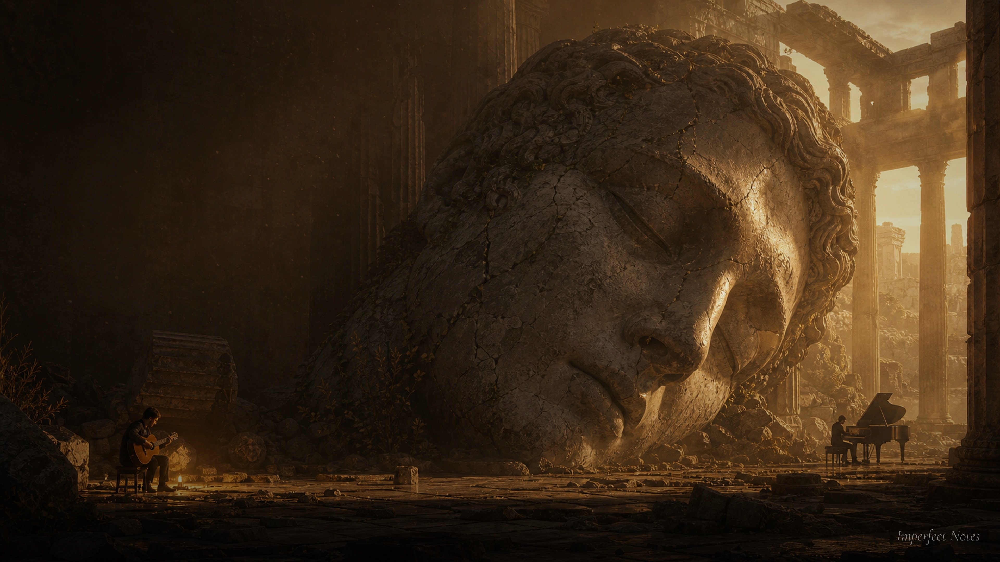

EP.11
Where the Last Light Lingers
Bittersweet Classical Guitar & Piano
本季This Season

Bittersweet Classical Guitar & Piano
聆聽Listen

有些聲音，你說不清楚它好在哪裡。
它只是在那裡。
在你需要安靜的時候，剛好在。
Imperfect Notes 做的，就是這樣的聲音。
不完美。但它是真的。
給還在撐著的人。
給需要一點空白的人。
給願意在喧囂裡，停下來聽一聽的人。
Some sounds, you can't explain why they move you.
They're just there.
There when you need quiet. Right on time.
That's what Imperfect Notes makes.
Imperfect. But real.
For those still holding on.
For those who need a moment of stillness.
For those willing to stop, in the noise, and listen.
支持這裡Support This
每期無損音頻下載（FLAC 格式）
¥ 9.9 / 月 自動續費 订阅无损音频 ¥9.9/月透過愛發電付款，支援微信支付與支付寶Payment via Aifadian · WeChat Pay & Alipay supported
留下信箱，新一期發布時我會通知你。Leave your email — I'll let you know when a new episode is out.